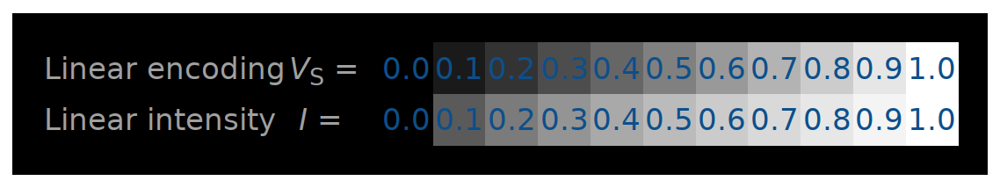

for (let i = 0; i < 200; ++i) {
document.write('<span style="color: hsl('
+ Math.random() * 360
+ ', 100%, 50%)">test<\/span> ');
}
HSV, случайный компонент Hue
HSV, случайный компонент Hue
HSV, случайный компонент Hue
Недостатки:
— почему-то мало цветов;
— почему-то цвета всё-равно разной яркости.
Можно ли сделать лучше?
Можно ли сделать лучше?
Как люди воспринимают цвета?
Как описать множество всевозможных цветов?
Как выглядит цветовое пространство?
Как численно описать это пространство?
Какие цвета могут быть воспроизведены?
Можно ли сделать лучше?
Как люди воспринимают цвета?
— под каким освещением смотреть?
— под каким углом смотреть?
— кто именно смотрит?
— как наблюдатель понимает цвета?
Можно ли сделать лучше?
Как посчитать яркость цвета, заданного в RGB*?
1. Brightness = max(r, g, b)
2. Brightness = (r + g + b) / 3
3. Brightness = 0.299 * r + 0.587 * g + 0.114 * b
4. Brightness = 0.2126 * r + 0.7152 * g + 0.0722 * b
На самом деле все способы выше неверны без контекста.
Какое именно пространство RGB имеется ввиду? Gamma?
Яркость каждой из компонент может зависить от монитора (впрочем, мониторы калибруются) и наблюдателя (а они не калибруются).
Задача: сгенерировать псевдослучайный цвет
Случайный оттенок цвета, но примерно одинаковой яркости и насыщенности.
Очевидное решение: перейти в пространство HSV?
Не подходит, потому что в HSV, V (value) — не яркость, а что-то другое.
И ещё мы не использовали S (saturation).
Перейдём в цветовое пространство YCbCr!
Задача: сгенерировать псевдослучайный цвет
for (let i = 0; i < 200; ++i) {
let y = 128;
let cb = Math.random() * 256;
let cr = Math.random() * 256;
let r = Math.max(0.0, Math.min(255.0,
y + 1.402 * (cr - 128)));
let g = Math.max(0.0, Math.min(255.0,
y - 0.344136 * (cb - 128) - 0.714136 * (cr - 128)));
let b = Math.max(0.0, Math.min(255.0,
y + 1.772 * (cb - 128)));
document.write('<span style="color: rgb('
+ r + ',' + g + ',' + b + ')">test<\/span> ');
}
YCbCr, случайные Cb, Cr
YCbCr, случайные Cb, Cr
Задача: сгенерировать псевдослучайный цвет,
Перейдём в цветовое пространство YCbCr фиксируем Y и генерируем Cb, Cr.
Идеально? Но есть нюанс...
В YCbCr, YPbPr, YUV, компонента Y — это тоже не совсем яркость!
Гамма-коррекция
В YCbCr, YPbPr, YUV, компонента Y — это «Luma» — нелинейно закодированная яркость с помощью gamma-compression.

sRGB #888888 на типичном мониторе - 20% от яркости, а не 50%.